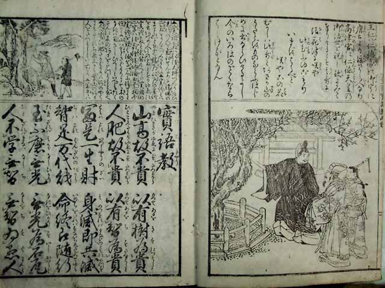

| 実語教 | |
| 作者不詳 | |
| 青空文庫 (2012) | |
「實語教」解説
實語教は平安時代に成立し、鎌倉時代に普及した書物です。儒教色が強く、また対句構成で暗記がしやすかったため江戸時代の寺子屋の素読用教材として非常に普及しました。
作者は弘法大師とされていますが確証はありません。
福沢諭吉の「学問のススメ」にも實語教からの引用が見られたり、出だしの〟山高きゆえに貴からず 木あるをもって貴しとす〟の一文を捉えて〟富士を見ぬ 奴がつくりし 實語教〟という川柳が作られたりした面をみてもかなり普及していたようです。
下の写真の本は文政三年に京都で発行された「文政新版實語教繪鈔」です。絵入りで解説も付記され比較的読みやすく構成されています。後半には「童子教」も掲載されています。（ほとんどの實語教の書物は童子教を含めた形で出版されています）

實語教
山高故不貴 以有樹為貴 山高きが故に貴からず。木有るを以て貴しとす。
人肥故不貴 以有智為貴 人肥えたるが故に貴からず。智有るを以て貴しとす。
富是一生財 身滅即共滅 富は是一生の財。身滅すれば即ち共に滅す。
智是万代財 命終即随行 智は是万代の財。命終われば即ち随って行く。
玉不磨無光 無光為石瓦 玉磨かざれば光無し。光無きを石瓦とす。
人不学無智 無智為愚人 人学ばざれば智無し。智無きを愚人とす。
倉内財有朽 身内財無朽 倉の内の財は朽つること有り。身の内の財は朽ちること無し。
雖積千両金 不如一日学 千両の金を積むと雖も。一日の学に如かず。
兄弟常不合 慈悲為兄弟 兄弟常に会わず。慈悲を兄弟とす。
財物永不存 才智為財物 財物永く存せず。才智を財物とす。
四大日々衰 心神夜々暗 四大日々衰え、心神夜々に暗し。
幼時不勤学 老後雖恨悔 幼きときに勤め学ばざれば、老いて後恨み悔ゆと雖も、
尚無有取益 故讀書勿倦 なお取益有るを無し。かかるが故に書を読んで倦むをなかれ。
学文勿怠時 除眠通夜涌 学文怠る時なかれ。眠りを除きて通夜に涌せよ。
忍飢終日習 雖會師不学 飢えを忍びて終日習え。師に會すと雖も学せざれば
徒如向市人 雖習讀不復 徒に市人に向かうが如し。習い読むと雖も復せざれば
只如計隣財 君子愛智者 只隣の財を数えるが如し。君子は智者を愛す。
小人愛福人 雖入富貴家 小人は福人を愛す。富貴の家に入ると雖も、
為無財人者 猶如霜下花 財無き人の為は、なお霜の下の花の如し。
雖出貧賤門 為有智人者 貧賤の門を出ずると雖も、智有る人の為には、
宛如泥中蓮 父母如天地 あたかも泥中の蓮の如し。父母は天地の如し。
師君如日月 親族譬如葦 師君は日月の如し。親族譬ば葦の如し。
夫妻猶如瓦 父母孝朝夕 夫妻は猶瓦の如く。父母には朝夕に孝せよ。
師君仕昼夜 交友勿諍事 師君には昼夜に仕えよ。友に交わって諍う事なかれ。
己兄尽禮敬 己弟致愛戯 己より兄には礼敬を尽くせ。己より弟には愛戯を致せ。
人而無智者 不異称木石 人として智無きは、木石に異ならず。
人而無孝者 不異称畜生 人として孝無きは、畜生に異ならず。
不交三学友 何遊七学林 三学の友に交わらずんば、何ぞ七学の林に遊ばん。
不乗四等船 誰渡八苦海 四等の船に乗らずんば、誰か八苦の海を渡さん。
八正道雖廣 十悪人不往 八正の道は廣しと雖も、十悪の人は往かず。
無為都雖楽 報逸輩不遊 無為の都に楽しむと雖も、報逸の輩は遊ばず。
敬老如父母 愛幼如子弟 老いたるを敬うは父母の如し、幼きを愛するは子弟の如し。
我敬他人者 他人亦敬我 我他人を敬へば、他人亦我を敬う。
己敬人親者 人亦敬己親 己人の親を敬えば、人亦己が親を敬う。
欲達己身者 先令達他人 己が身をば達っせんと欲せば、先ず他人の身を達っせしめよ。
見他人之愁 即自共可患 他人の愁いを見ては、即ち自ら共に患うべし。
聞他人之嘉 即自共可悦 他人のよろこびを聞いては、即ち自ら共に悦ぶべし。
見善者速行 見悪者忽避 善を見ては速やかに行け、悪を見ては忽ち避れ。
好悪者招禍 譬如響応音 悪を好む者は禍を招く。譬ば響きの音に応ずるが如し。
修善者蒙福 宛如随身影 善を修する者は福を蒙る。あたかも身に影の随うが如し。
雖富勿忘貧 或始富終貧 富むと雖も貧しきを忘るることなかれ。或いは始めに富み終わりに貧しいとも。
雖貴勿忘賎 或先貴後賎 貴しと雖も賎しきを忘るることなかれ。或いは先に貴く終わりに賎しくとも。
夫難習易忘 音聲之浮才 それ習い難く忘れ易しは、音声の浮才。
又易学難忘 書筆之博藝 また学び易く忘れ難しは、書筆の博藝。
但有食有法 又有身有命 但し食有れば法有り、また身あれば命有り。
猶不忘農業 必莫廢学文 なお農業を忘れざれば、必ず学文廃することなかれ。
故末代学者 先可按此書 故に末代の学者、先ず此の書を按ずべし。
是学文之始 身終勿忘失 是学文の始まり、身終つるまで忘失することなかれ。